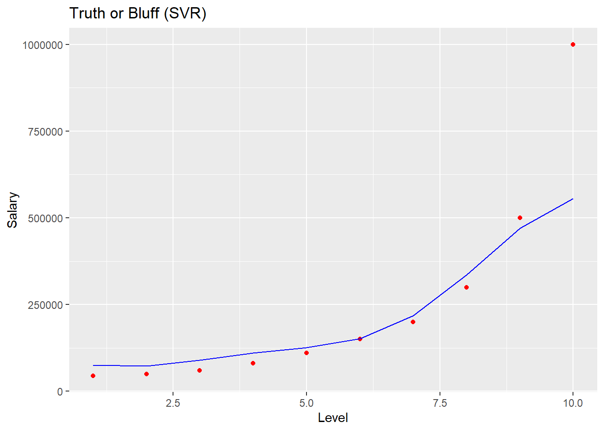

library(ggplot2)
ggplot() +
geom_point(aes(x = dataset$Level, y = dataset$Salary),
colour = 'red') +
geom_line(aes(x = dataset$Level, y = predict(regressor, newdata = dataset)),
colour = 'blue') +
ggtitle('Truth or Bluff (SVR)') +
xlab('Level') +
ylab('Salary')
library(ggplot2)
x_grid = seq(min(dataset$Level), max(dataset$Level), 0.1)
ggplot() +
geom_point(aes(x = dataset$Level, y = dataset$Salary),
colour = 'red') +
geom_line(aes(x = x_grid, y = predict(regressor, newdata = data.frame(Level = x_grid))),
colour = 'blue') +
ggtitle('Truth or Bluff (SVR)') +
xlab('Level') +
ylab('Salary')